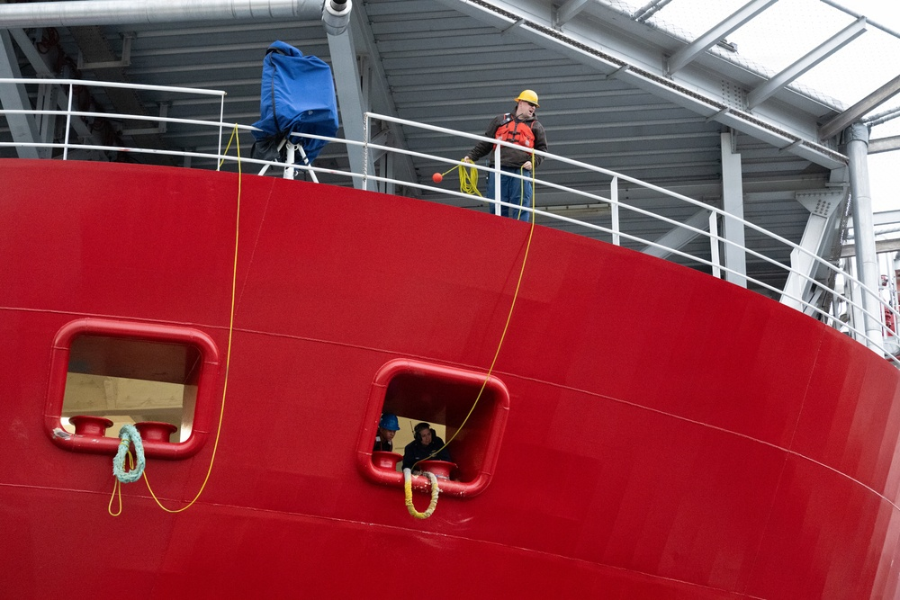

Petty Officer 3rd Class Adrian Sanchez Villa / U.S. Coast Guard · DVIDS 10096175 · Public domain · A Storis crew member prepares to throw a heaving line at Coast Guard Base Seattle, Nov. 14, 2026.
DVIDS
Coast Guard icebreaker Storis is back in Seattle after 133 days as the only U.S. surface ship in the High Arctic, a patrol that included the first polar-icebreaker law-enforcement mission in more than 20 years
Storis returned to its temporary home port at Coast Guard Base Seattle on Saturday after covering more than 17,000 nautical miles, according to the official Coast Guard release posted Tuesday. On Operation Frontier Sentinel the cutter spent more than 300 hours watching foreign-flagged research ships and tracked four Chinese-flagged research vessels over the U.S. extended continental shelf. The crew also ran the first live-fire gunnery exercise by a Coast Guard surface ship in ice-covered Arctic water in decades, boarded fishing vessels in the Bering Sea with NOAA, and sailed with Canadian and U.S. cutters on Operation Tundra Merlin.
DVIDS · Read source →